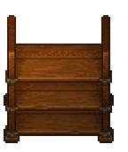

Mortuary rack
| Mortuary rack | |
|---|---|
 | |
Basic information
| |
Required Technology :
|
Embalming |
Related pages :
|
Storage |
Building Information
| |
Horizontal x Vertical :
|
4x2 |
Rotatable :
|
False |
Location(s)
| |
| Morgue | |

The mortuary rack is used to store items and has 25 slots of capacity before it is full. All items stored in a location will be accessible to all other workstations in that area automatically and can be reviewed by opening the player inventory when in the area. For more information see storage.
Horizontal and vertical : 4 X 2
Rotation : No
Cost
| Icon | Materials Required | Energy | Notes |
|---|---|---|---|

|
8× Flitch |
Requires Embalming |
| ||||||||